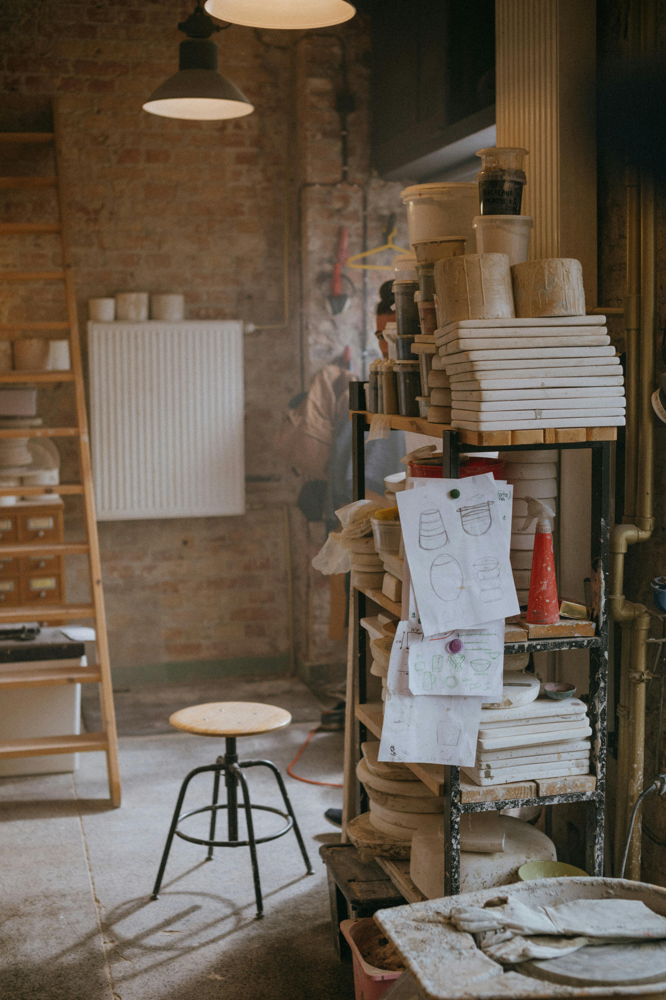

01

Step One: Preparation
Prepare your workspace and gather the necessary materials for the ceramic process. This includes clay, plaster, tools, and any other supplies needed for creating your ceramic piece. Especially ensure that you select your appropriate slip casting mold.